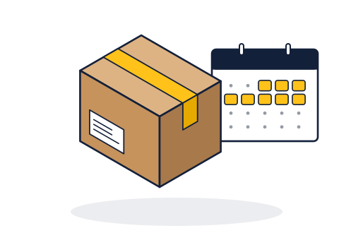

Titip Libur
Untuk mahasiswa yang pulang kampung saat libur semester dan tidak mau membayar kamar kos yang kosong.
Yang kamu dapat
- Kamu bisa melepas kamar selama libur dan menghemat sewa.
- Jemput dan antar gratis mulai 4 kardus dalam satu wilayah layanan.
- Isi kardus difoto di depanmu, setiap kardus punya kode lacak.
- Barang bisa diantar ke kos lama atau langsung ke kos baru.
Tarif
Kardus 60 × 40 × 40 cmRp30.000 / bulan
Barang besar (kipas, kasur lipat, rak)Rp50.000 / bulan
Jemput & antar, kurang dari 4 kardusRp20.000
Masa titip minimal1 bulan
Cara mendapatkan
Pesan lewat WhatsApp atau formulir di halaman Kontak paling lambat tiga hari sebelum tanggal jemput. Pembayaran dilakukan setelah barang dijemput dan dicatat.